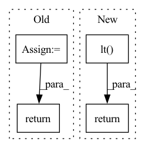

Pattern ID :12166

Before Change
def get_mistakes(self, sent):
if self.__config["language_tool"] is None:
import language_tool_python
self.__config["language_tool"] = language_tool_python.LanguageTool("zh-CN")
return len(self.__config["language_tool"].check(sent))
After Change
return self.lm(sent)
def get_mistakes(self, sent):
return len(self.lt(sent))
In pattern: SUPERPATTERN
Frequency: 4
Non-data size: 4
Instances
Fragment ID: 41112531
Project Name: thunlp/openattack
Commit Name: 20b6e193016c9c4a5723549ce263bdd960a5c3d8
Time: 2021-04-15
Author: zhang-tj18@mails.tsinghua.edu.cn
File Name: OpenAttack/attack_evals/chinese_eval.py
M Class Name: ChineseAttackEval
N Class Name: ChineseAttackEval
M Method Name: get_mistakes(2)
N Method Name: get_mistakes(2)
M Parent Class: DefaultAttackEval
N Parent Class: DefaultAttackEval
M File Name: OpenAttack/attack_evals/chinese_eval.py
N File Name: OpenAttack/attack_evals/chinese_eval.py
M Start Line: 37
M End Line: 41
N Start Line: 41
N End Line: 41
'>
Before Change
def get_attn_pad_mask(inputs, input_lengths, expand_length):
mask position is set to 1
non_pad_mask = get_non_pad_mask(inputs, input_lengths=input_lengths)
pad_mask = non_pad_mask.squeeze(-1).lt(1)
attn_mask = pad_mask.unsqueeze(1).expand(-1, expand_length, -1)
return attn_mask
After Change
return non_pad_mask
non_pad_mask = get_transformer_non_pad_mask(inputs, input_lengths)
pad_mask = non_pad_mask.lt(1)
attn_pad_mask = pad_mask.unsqueeze(1).expand(-1, expand_length, -1)
return attn_pad_mask
def get_attn_subsequent_mask(seq):
'>
Fragment ID: 41112530
Project Name: sooftware/speech-transformer
Commit Name: cf3f628c8c2d8bd5374d7e166d02dd584cae835b
Time: 2021-05-23
Author: sooftware@Soohwanui-MacBookPro.local
File Name: speech_transformer/mask.py
M Class Name: AnonimousClass
N Class Name: AnonimousClass
M Method Name: get_attn_pad_mask(3)
N Method Name: get_attn_pad_mask(3)
M Parent Class:
N Parent Class:
M File Name: speech_transformer/mask.py
N File Name: speech_transformer/mask.py
M Start Line: 66
M End Line: 69
N Start Line: 38
N End Line: 41
'>
Before Change
- betaln(n - value + 1, bad - n + value + 1)
- betaln(tot + 1, 1)
)
return result
class DiscreteUniform(Discrete):
After Change
- betaln(tot + 1, 1)
)
// value in [max(0, n - N + k), min(k, n)]
lower = tt.switch(tt.gt(n - N + k, 0), n - N + k, 0)
upper = tt.switch(tt.lt(k, n), k, n)
return bound(result, lower <= value, value <= upper)
class DiscreteUniform(Discrete):
'>
Fragment ID: 41112528
Project Name: pymc-devs/pymc3
Commit Name: 0402aab9594ec7c4f63c4ea35a52428d424652b4
Time: 2020-12-22
Author: 28983449+ricardoV94@users.noreply.github.com
File Name: pymc3/distributions/discrete.py
M Class Name: HyperGeometric
N Class Name: HyperGeometric
M Method Name: logp(2)
N Method Name: logp(2)
M Parent Class: Discrete
N Parent Class: Discrete
M File Name: pymc3/distributions/discrete.py
N File Name: pymc3/distributions/discrete.py
M Start Line: 925
M End Line: 933
N Start Line: 920
N End Line: 936
'>
Before Change
@staticmethod
def backward(ctx, grad_output):
inputs, b = ctx.saved_tensors
pass_through_1 = inputs >= b
pass_through_2 = grad_output < 0
pass_through = pass_through_1 | pass_through_2
return pass_through.type(grad_output.dtype) * grad_output, None
def standardized_CDF_gaussian(value):
// Gaussian
After Change
@staticmethod
def backward(ctx, grad_output):
gate = torch.logical_or(ctx.mask, grad_output.lt(0.)).type(grad_output.dtype)
return grad_output * gate, None
def standardized_CDF_gaussian(value):
// Gaussian
'>
Fragment ID: 41112526
Project Name: justin-tan/high-fidelity-generative-compression
Commit Name: 7077e9ea5c4c1c2446dcc56b0aa5abf2da342d15
Time: 2020-08-17
Author: justan@student.unimelb.edu.au
File Name: src/helpers/maths.py
M Class Name: LowerBoundToward
N Class Name: LowerBoundToward
M Method Name: backward(2)
N Method Name: backward(2)
M Parent Class: torch.autograd.Function
N Parent Class: torch.autograd.Function
M File Name: src/helpers/maths.py
N File Name: src/helpers/maths.py
M Start Line: 40
M End Line: 45
N Start Line: 27
N End Line: 28